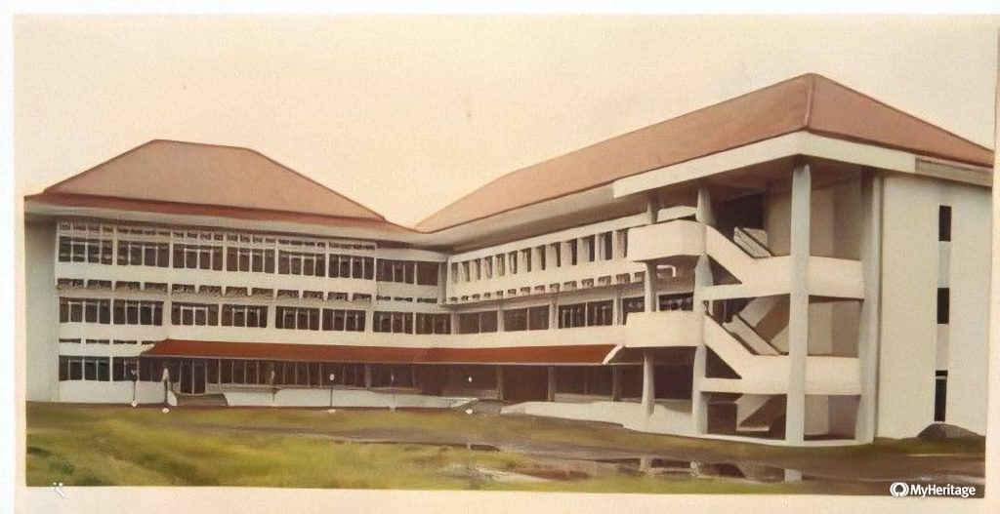

Tentang Geodesi
 Pengantar pada Ilmu Geodesi: Mengukur dan Memahami Bumi Geodesi adalah cabang ilmu geosains yang berfokus pada pengukuran, pemodelan, analisis, dan pemahaman tentang bentuk, ukuran, gravitasi, dan pergerakan Bumi serta objek-objek di atasnya. Istilah "geodesi" berasal dari bahasa Yunani, di mana "geo" berarti Bumi dan "daínein" berarti membagi. Secara harfiah, geodesi merujuk pada pemahaman tentang pembagian Bumi. Tujuan dan Ruang Lingkup Geodesi: Tujuan utama geodesi adalah untuk memahami dimensi dan bentuk Bumi dengan akurasi tinggi. Ilmu ini melibatkan pengukuran titik-titik di permukaan Bumi, pengamatan bintang dan planet, serta analisis data untuk menghasilkan model yang akurat tentang geoid (permukaan laut yang ideal) dan elipsoid (bentuk Bumi yang lebih dekat dengan bola).